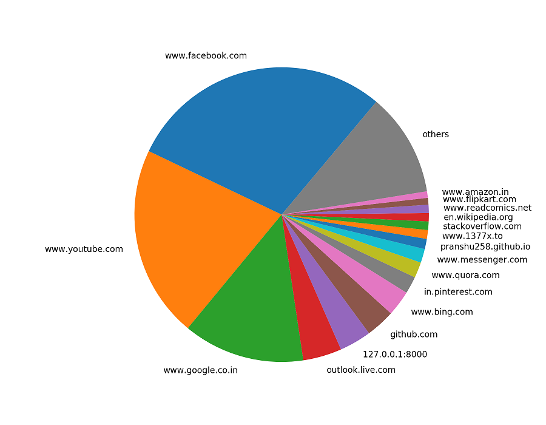
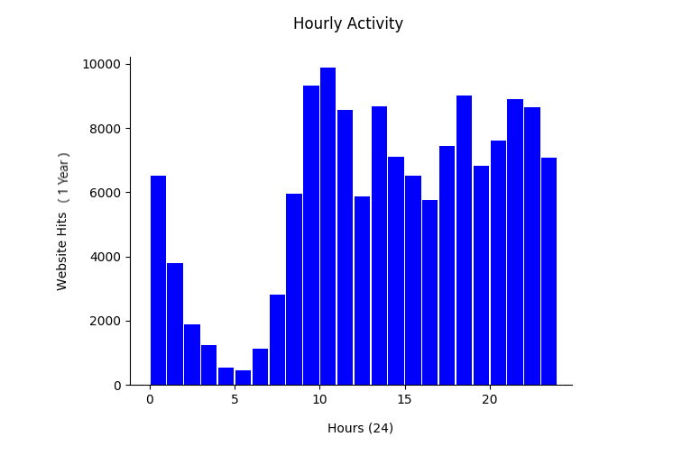
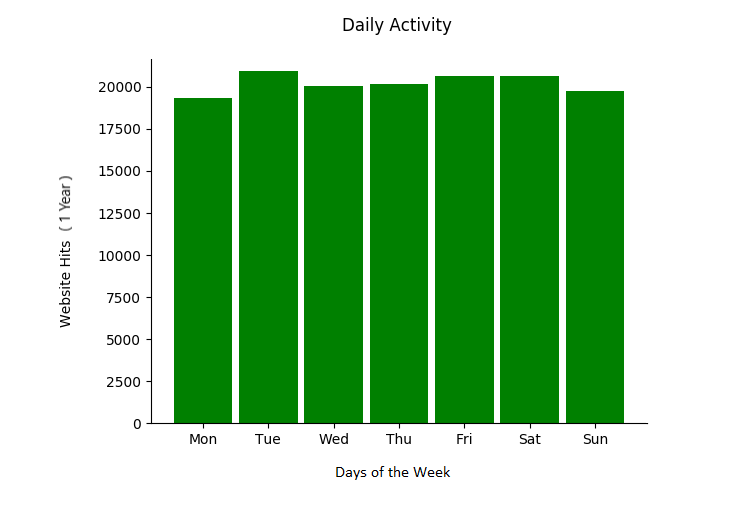
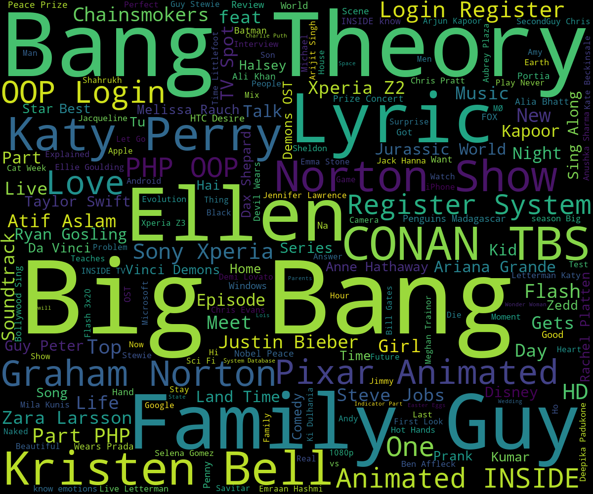

In this modern world, where we are almost always on the internet in our waking hours. We are searching for different things, visiting websites, using online services. All this activity can tell many things about us as a person. The keywords in our searches, the websites we visit can tell us what we like, what our interests are and many more things. This raises serious question about privacy, companies like Google and Facebook essentially can carve out our entire personality based on this data - which of course is always recorded - though privacy policies restrict them from sharing the data to a third party.
DOWNLOADING MY GOOGLE DATA
We can export and download our data from the Google products we use, like search, youtube, email, calender, and photos. We can customize the data that we want to include or exclude as well. For more information visit https://support.google.com/accounts/answer/3024190?hl=en
A WORDCLOUD OF MY SEARCH KEYWORDS
The keywords we use in our searches can alone tell many things about us. A wordcloud is an illustration of the most frequent words from a corpus. The size of a word in a wordcloud is determined by its frequency in the corpus. So, in a wordcloud generated using our search keywords, the words which appear bigger are those about which we search the most. This is the wordcloud generated using my search keywords:
There are many terms related to programming and computer science in wordcloud - Algorithm, Database, System, Server, API, names of several programming languages etc. which tell us that I am either studying Computer Science or I work in that field, which is true. Also, Python is the most used word in my searches, clearly Python is my favorite programming language. Windows and Ubuntu appear next, mainly because by primary device is dual booted with these OSs. I frequently search for wallpapers and PDF files for books and research papers, so we see those two words in the wordcloud as well.
If we observe carefully, the geographical locations that appear frequently in my searches are India, Uttar Pradesh, Gorakhpur and Kanpur. These are the places where I have been most of my life. IIT Kanpur is the only institute that we see in the figure, that is where I studied Computer Science and Engineering.
Flash and Wonder Woman are the only superheroes that appear in the wordcloud. Not a very traditional choice (considering Batman, Ironman etc) but yes, The Flash and Wonder Woman are my favorites. Though, I like Batman very much as well.
The word movie also appears considerably big which tells that I watch movies frequently, which is true. I watch one or two movies every week. If we talk about celebrities Anne Hathaway is the only one who appears in my wordcloud and she is indeed the one I like the most. I don't have a liking for any particular male actor so none appears in the wordcloud.
If we look even closer, Sony and Lenonvo are the electronics companies that appear in my wordcloud and that's because my phone is a Xperia and my laptop is a Lenovo Ideapad.
DECODING MY BROWSING HISTORY
It appears that half of all the URLs that are hit in my browser (Chrome) belong to Facebook and Youtube. The rest is occupied by Google Search, Outlook Mail, Github and others.
This clearly the supports concern about us wasting too much time on social media. Facebook is the only social media I am active on, though I have accounts on Twitter etc as well, but Facebook is the go to social media for me. That may have saved some of my time, but this might be just some wishful thinking.
We can even find out the sleeping pattern of a person from his/her browsing history. This is what I got when I plotted mine against hours of the day (and night :P)
I have the least activity between 2 AM and 8 AM, because I am often asleep in those hours. Our browsing activity clearly reflects our sleeping patterns. Google knows when we sleep and when we wake up. It is creepy but that is the way it is. You may delete your activity but we can expect that the model is learnt as the data arrives and they don't need to keep the data forever.
What about daily activity? It turns out that I do not use internet differently on weekends as compared to working days which is apparent from the following bar chart.
This is not all, we can always dig deeper and/or analyze a bigger dataset to extract more information. The dataset I used in this experiment was the record of my online activity in the past 4 years. This is what Google and Facebook do (on a larger scale and using more sophisticated techniques), that's how they show recommendations and ads.
DECODING MY YOUTUBE WATCH HISTORY
I created a wordcloud from the titles of the videos in my watch history. It uses my YouTube data spanning only the past year, hence the wordcloud only represents my YouTube activity in 2016-17. It tells us that I watch a lot clips from 'The Big Bang Theory', 'The Ellen Show' and 'Family Guy' on YouTube along with Lyrics videos of songs. I watch other TV shows as well but on other sites for which I don't have the data as of now.

SEE YOUR OWN DIGITAL FOOTPRINT
If we want to do your own experiment, you can feel free to use and/or edit a copy of my code. You can get it on GitHub at the links below. Please have a look at the README file in the code repo for instructions on how to run the code. Happy Coding!!!
Download the code or fork the repository on GitHub
Explore Fork Download Follow me on GitHub
See Your Own Digital Footprint
Download the code or fork the repository on GitHub
Fork Download

Follow me on GitHub